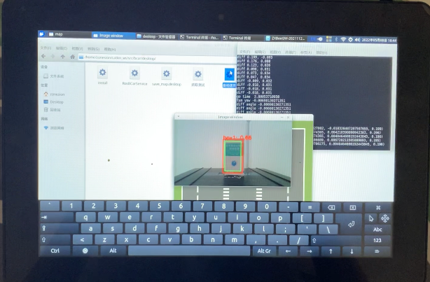
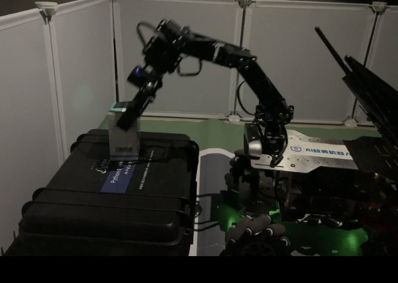
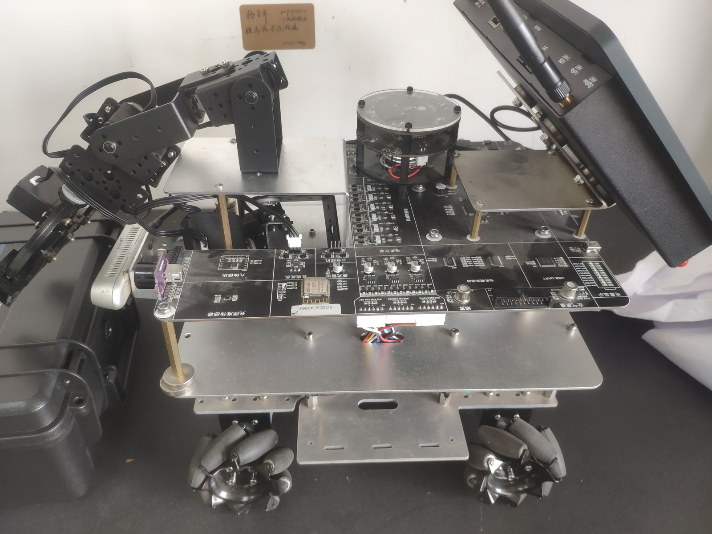
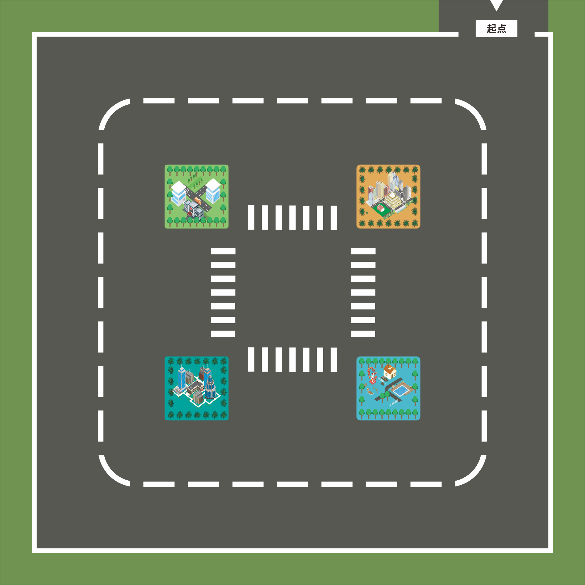
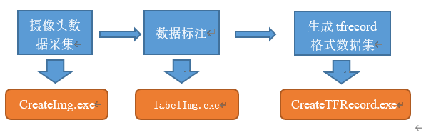
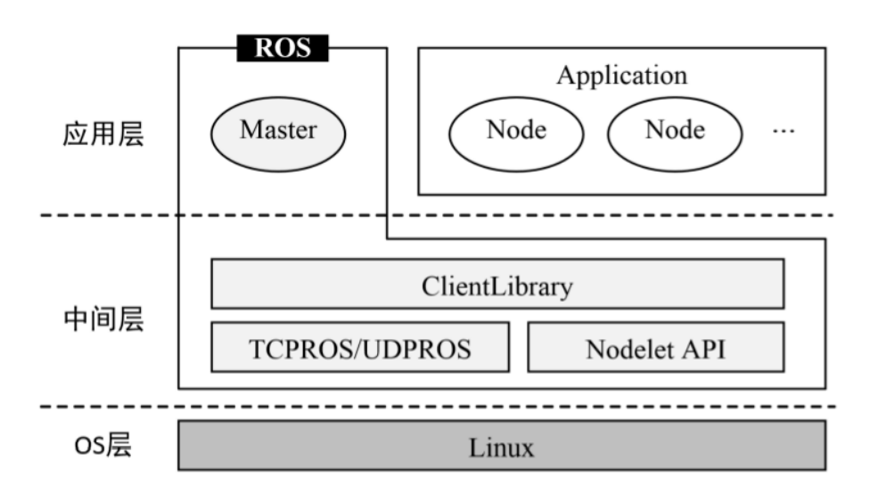

机器人车库
移动机器人视觉识别与自主抓取系统
基于 ROS 智能小车、RealSense 深度相机和五自由度机械臂，完成“路径导航 - 药品识别 - 三维定位 - 机械臂抓取”的自动化药房任务闭环。
项目概览
该项目来自本科毕业设计《基于机器视觉的机械臂智能抓取设计》，并与实习阶段的 ROS 智能小车导航、路径规划和智慧交通实验材料相互衔接。
系统面向自动化药房场景：移动底盘负责导航到任务区域，视觉模块识别目标药盒，深度相机计算三维位置，机械臂完成抓取、释放和复位。
任务流程
01
地图导航
ROS 小车路径执行
02
视觉识别
YOLOv3-tiny / RKNN
03
三维定位
RealSense RGB-D
04
轨迹规划
MoveIt / IK
05
抓取验证
夹爪控制与复位
系统组成
- 移动底盘：ROS 智能小车，承载地图导航、路径执行、交通标志识别和任务点调度。
- 视觉模块：使用 OpenCV 采集图像，使用 labelImg 标注药品数据，基于 YOLOv3-tiny / RKNN 完成 4 类药品检测。
- 定位模块：RealSense 深度相机输出 424 × 240 深度/彩色图像，将检测框中心点转换为相机坐标系三维坐标。
- 抓取模块：基于 MoveIt、逆运动学和轨迹过滤生成抓取姿态，完成夹爪开合、抓取、释放和复位。
视觉识别与抓取结果
实验中通过图像标注、模型测试、深度定位和夹爪角度调参，在演示环境下将药品识别准确率提升至接近 100%，抓取成功率提升至约 80%。




导航与路径材料
原始材料中包含地图、路径点、路径跟踪和智慧交通任务逻辑。路径执行部分可与抓取任务结合，用于把机器人移动到目标货架或取药点。


代码证据
项目材料中可见机器人调试程序包含 60 个 Python 脚本/模块，覆盖地图路径、目标检测、交通标志识别、路径跟踪、串口通信、WebSocket 通信和机械臂控制。
bcar / script / locObj.py：RealSense 深度相机、目标三维坐标计算和多帧稳定检测
bcar / script / obj_detection_rk1808 / pill_detection.py：4 类药品检测与 RKNN 推理
bcar / script / trafficsign_rk1808 / light_detection.py：交通标志识别
bcar / script / tracking / pure_pursuit.py、mpc.py、stanley_controller.py：路径跟踪控制
bcar / script / map / map_path.py：地图路径、取放点和路径执行逻辑
bcar / launch / grasp_filter_test.launch：MoveIt 抓取姿态过滤与 IK 配置
模型与通信流程


代码公开说明
该项目代码可以公开。正式发布前，需要清理生成文件、冗余第三方包、模型二进制、机器相关配置和较大的视频素材。